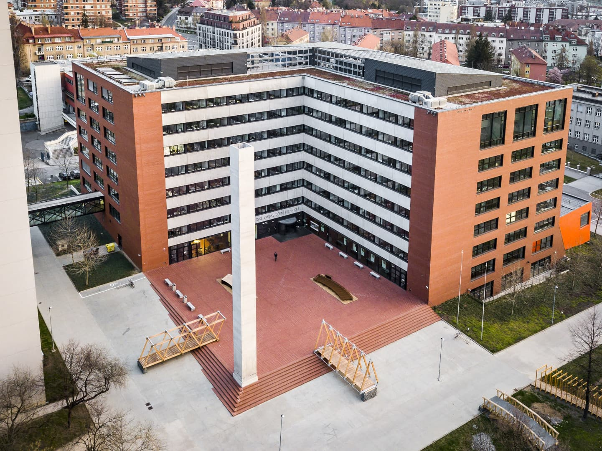

Studium v srdci Dejvic
ČVUT je jednou z největších a nejstarších technických univerzit v Evropě. Příprava probíhá s ohledem na moderní trendy.
-
Analýza a limity Funkce, limity a základy derivací (pokud jsou vyžadovány).
-
Geometrie Analytická geometrie a stereometrie – pilíře technické matematiky.
-
Logaritmy bez kalkulačky Práce s logaritmy a exponenciálami tak, jak se to vyžaduje u zkoušek.
Jelikož sám na ČVUT studoval, vím, jaké jsou nároky v prvním semestru. Moje doučování tě nepřipraví jen na přijímačky, ale i na to, abys školu hned v prvním ročníku nezabalil.
Fakulty, na které tě připravím

FIT ČVUT
Informatika a moderní technologie. Připravím tě na logické testy a matematickou analýzu.
Web fakulty


Časté otázky
Stačí příprava jen na přijímačky, nebo pomůžete i s prvním semestrem?
Zaměřujeme se především na přijímačky, ale probereme i základy, které využiješ hned v prvním semestru (limity, derivace).
Na jakou fakultu ČVUT se dá připravit?
FIT, FEL, FS i FSv – matematická část přijímaček je u většiny fakult podobná, konkrétní zaměření přizpůsobím podle toho, kam se hlásíš.
Kolik lekcí obvykle stačí?
Záleží na tvé aktuální úrovni a termínu přijímaček. Na úvodní konzultaci zdarma probereme reálný plán.
Probíhá výuka i online?
Ano, osobně v Praze i online přes videohovor – podle toho, co ti víc vyhovuje.
RYCHLÁ ANKETA
Zajímá tě příprava na ČVUT?
Napiš mi pár údajů a domluvíme si úvodní konzultaci k přijímačkám na ČVUT.